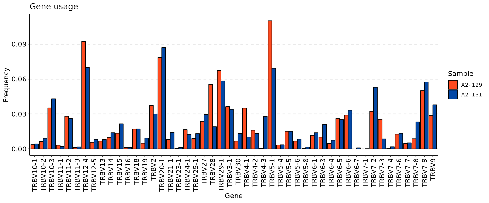
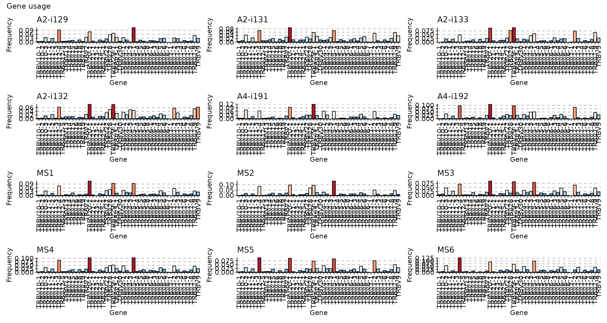
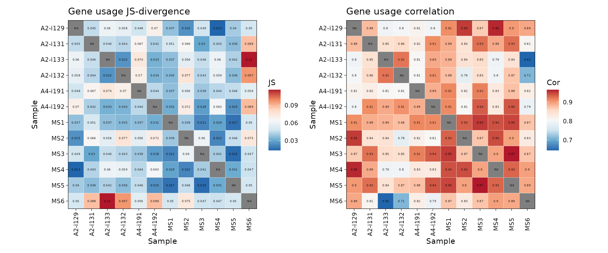
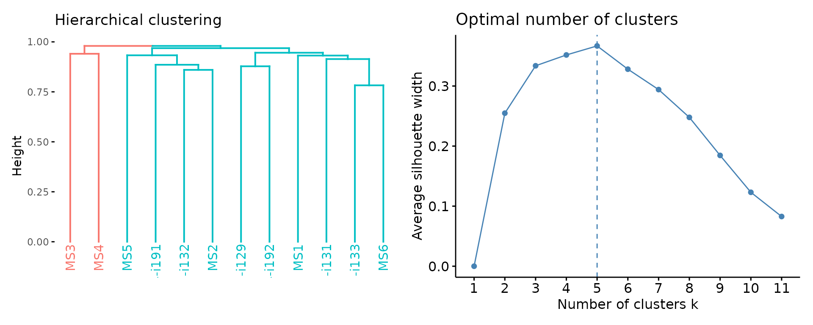
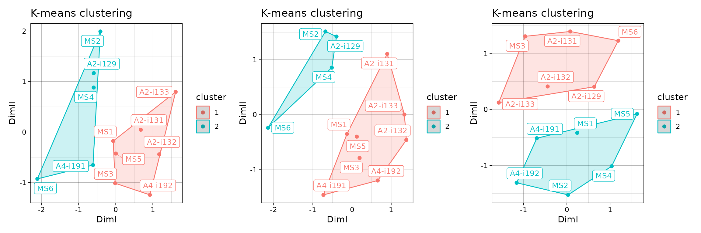
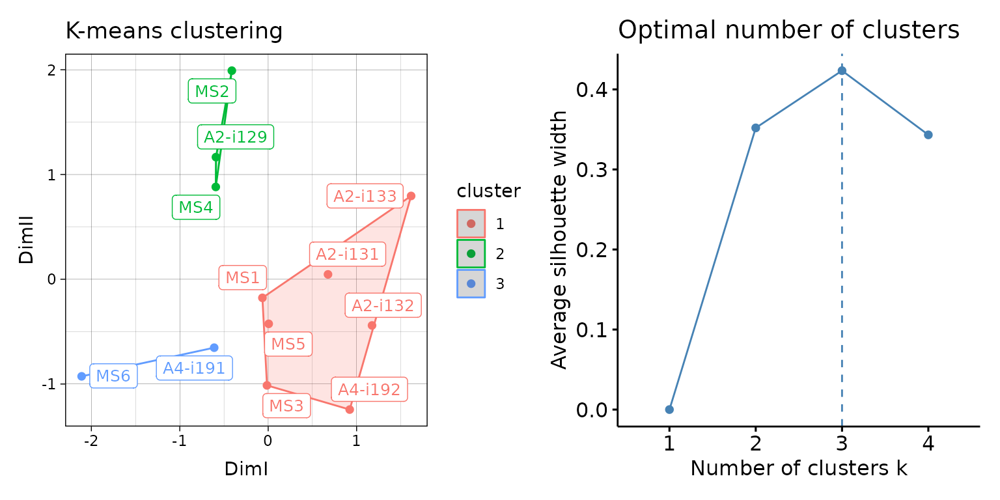

Gene usage analysis
ImmunoMind
support@immunomind.io
Source:vignettes/web_only/v5_gene_usage.Rmd
v5_gene_usage.RmdGene usage computation
immunarch comes with a gene segments data table containing known gene segments for several species following the IMGT nomenclature. In order to get the current statistics of genes, call the gene_stats() function:
## alias species ighd ighj ighv igij igkj igkv iglj iglv traj
## 1 bt BosTaurus 21 4 25 0 1 6 5 26 46
## 2 cd CamelusDromedarius 0 0 0 0 0 0 0 0 0
## 3 clf CanisLupusFamiliaris 0 0 0 0 0 0 0 0 0
## 4 dr DanioRerio 7 7 0 3 0 0 0 0 0
## 5 hs HomoSapiens 30 13 248 0 5 64 7 69 57
## 6 macmul MacacaMulatta 24 7 19 0 4 83 5 0 0
## 7 mmc MusMusculusCastaneus 0 0 0 0 0 4 0 0 0
## 8 mmd MusMusculusDomesticus 0 0 0 0 0 2 0 0 0
## 9 musmus MusMusculus 32 8 225 0 8 109 3 5 42
## 10 oa OrnithorhynchusAnatinus 3 10 0 0 0 0 0 0 0
## 11 oc OryctolagusCuniculus 10 11 39 0 8 26 2 20 0
## 12 om OncorhynchusMykiss 9 7 6 0 0 0 0 0 0
## 13 rn RattusNorvegicus 30 4 113 0 6 132 2 8 0
## 14 smth MusMusculusMolossinus 0 0 0 0 0 1 0 0 0
## 15 smth MusMusculusMusculus 0 0 0 0 0 1 0 0 0
## 16 smth MusSpretus 0 0 0 0 0 2 0 2 0
## 17 ss SusScrofa 5 5 15 0 8 19 4 14 0
## trav trbd trbj trbv trdd trdj trdv trgj trgv
## 1 0 0 0 0 5 3 0 6 15
## 2 0 0 0 0 0 0 7 2 2
## 3 0 2 8 19 0 0 0 7 8
## 4 0 0 0 0 0 0 0 0 0
## 5 60 3 14 64 3 4 6 4 10
## 6 0 2 15 58 0 0 0 0 0
## 7 0 0 0 0 0 0 0 0 0
## 8 0 0 0 0 0 0 0 0 0
## 9 145 2 14 23 2 3 7 0 11
## 10 0 0 0 0 0 0 0 0 0
## 11 0 0 0 0 0 0 0 0 0
## 12 0 1 9 0 0 0 0 0 0
## 13 0 0 0 0 0 0 0 0 0
## 14 0 0 0 0 0 0 0 0 0
## 15 0 0 0 0 0 0 0 0 0
## 16 0 0 0 0 0 0 0 0 0
## 17 0 0 0 0 0 0 0 0 0To compute the distributions of genes, immunarch includes the geneUsage function. It receives a repertoire or a list of repertoires as input and genes and species for which you want to get the statistics. E.g., if you plan to use TRBV genes of Homo Sapiens, you need to use the hs.trbv string in the function, where hs comes from the alias column and trbv is the gene name. Of if you plan to use IGHJ genes of Mus Musculus, you need to use musmus.ighj:
# Next four function calls are equal. "hs" is from the "alias" column. imm_gu = geneUsage(immdata$data, "hs.trbv") # imm_gu = geneUsage(immdata$data, "HomoSapiens.trbv") # imm_gu = geneUsage(immdata$data, "hs.TRBV") # imm_gu = geneUsage(immdata$data, "HomoSapiens.TRBV") imm_gu
## # A tibble: 48 x 13
## Names `A2-i129` `A2-i131` `A2-i133` `A2-i132` `A4-i191` `A4-i192` MS1 MS2
## <chr> <int> <int> <int> <int> <int> <int> <int> <int>
## 1 TRBV… 26 34 NA 21 32 6 20 6
## 2 TRBV… 54 69 8 34 35 20 29 39
## 3 TRBV… 264 320 154 128 429 256 217 165
## 4 TRBV… 29 22 33 20 22 18 16 12
## 5 TRBV… 208 193 153 181 110 130 107 123
## 6 TRBV… 10 15 8 30 2 9 5 15
## 7 TRBV… 682 541 376 495 396 640 470 694
## 8 TRBV… 46 63 9 46 20 19 8 22
## 9 TRBV… 50 59 52 87 33 47 45 33
## 10 TRBV… 79 109 55 80 44 37 25 105
## # … with 38 more rows, and 4 more variables: MS3 <int>, MS4 <int>, MS5 <int>,
## # MS6 <int>Gene distributions could be computed either using counts of individual clonotypes (.quant = "count") or not using them (.quant = NA).
In order to compute allele-level or family-level distributions, change the .type parameter.
Parameter .norm controls whether immunarch will normalise the data to ensure the sum of all frequencies to be equal 1 or not.
You can visualise the histogram of gene usage in different ways:
# Compute the distribution of the first two samples imm_gu = geneUsage(immdata$data[c(1,2)], "hs.trbv", .norm = T) vis(imm_gu)

imm_gu = geneUsage(immdata$data, "hs.trbv", .norm = T) vis(imm_gu, .by = "Status", .meta = immdata$meta)
vis(imm_gu, .grid = T)

Another practical approach to the visualisation of group distributions are box plots:
vis(imm_gu, .by = "Status", .meta = immdata$meta, .plot = "box")
Sometimes tree maps could be used to reveal the differences in repertoires. They display the overall picture and the comparisons of related items, both at the same time, enabling intelligible exploration of the details:

Ambiguity of gene segment names
Due to the ambiguity of gene alignments for some clonotypes, geneUsage has the following options to deal with ambiguous data:
.ambig = "inc"- includes all possible combinations of ambiguous gene alignments from the data. NOTE: ImmunoSEQ formats use non-standart gene segment names, so it is preferable to use this argument value with ImmunoSEQ formats. This argument is ON by default to ease the gene manipulation. Feel free to change it to"exc"in case of other data formats. It is ON by default, we recommend it to leave it that way..ambig = "exc"- filters out all clonotypes with ambiguous gene alignments..ambig = "wei"- introduces weighted approach (divides by n (1/n) the frequency for each entry of the corresponding gene if there arengenes for a clonotype)..ambig = "maj"- chooses only the first gene segment.
Gene usage analysis
To analyse the gene usage immunarch introduces the geneUsageAnalysis function. The .method parameter controls how the data is going to be preprocessed and analysed. geneUsageAnalysis includes following methods for preprocessing:
“js” - Jensen-Shannon Divergence.
“cor” - correlation.
“cosine” - cosine similarity.
“pca” - principal component analysis.
“mds” - multi-dimensional scaling.
“tsne” - t-Distributed Stochastic Neighbor Embedding.
And a few methods for the actual analysis:
“hclust” - clusters the data using hierarchical clustering.
“kmeans” - clusters the data using K-means.
“dbscan” - clusters the data using DBSCAN.
“kruskall” - compute Kruskall for each gene separately on data splitted to groups (without preprocessing). Results could be used with Dunn test in order to detect significant differences between groups.
You can call several methods in a single line of code, which is probably the most powerful feature of the package. For instance, "js+hclust" first computes Jensen-Shannon divergence and then applies hierarchical clustering on the resulting distance matrix, whereas "anova" computes ANOVA on each gene separately after repertoires have been grouped:
imm_gu = geneUsage(immdata$data, "hs.trbv", .norm = T) imm_gu_js = geneUsageAnalysis(imm_gu, .method = "js", .verbose = F) imm_gu_cor = geneUsageAnalysis(imm_gu, .method = "cor", .verbose = F) gridExtra::grid.arrange(vis(imm_gu_js, .title = "Gene usage JS-divergence", .leg.title = "JS", .text.size=1.5), vis(imm_gu_cor, .title = "Gene usage correlation", .leg.title = "Cor", .text.size=1.5), ncol = 2)

Now let us visualise the output after both preprocessing and analysis:
imm_gu_js[is.na(imm_gu_js)] = 0 vis(geneUsageAnalysis(imm_gu, "cosine+hclust", .verbose = F))

#vis(geneUsageAnalysis(imm_gu, "js+dbscan", .verbose = F))
On top of that you can add clustering:
imm_cl_pca = geneUsageAnalysis(imm_gu, "js+pca+kmeans", .verbose = F) imm_cl_mds = geneUsageAnalysis(imm_gu, "js+mds+kmeans", .verbose = F) imm_cl_tsne = geneUsageAnalysis(imm_gu, "js+tsne+kmeans", .perp = .01, .verbose = F)
## Perplexity should be lower than K!grid.arrange(vis(imm_cl_pca, .plot = "clust"), vis(imm_cl_mds, .plot = "clust"), vis(imm_cl_tsne, .plot = "clust"), ncol = 3)

You can regulate the number of clusters as well:
imm_cl_pca2 = geneUsageAnalysis(imm_gu, "js+pca+kmeans", .k = 3, .verbose = F) vis(imm_cl_pca2)

Spectratyping
Spectratype is a useful way to represent distributions of genes per sequence length. Parameter .quant controls the quantity that used to compute proportions of genes - either by clonotype (id) or by number of clones per clonotype (count). Parameter .col controls which column to choose, e.g., “nt” for lengths of CDR3 nucleotide sequences only (without grouping by gene segments), “aa+v” for lengths of CDR3 amino acid sequences (grouped by V gene segments).
p1 = vis(spectratype(immdata$data[[1]], .quant = "id", .col = "nt")) p2 = vis(spectratype(immdata$data[[1]], .quant = "count", .col = "aa+v")) grid.arrange(p1, p2, ncol = 2)